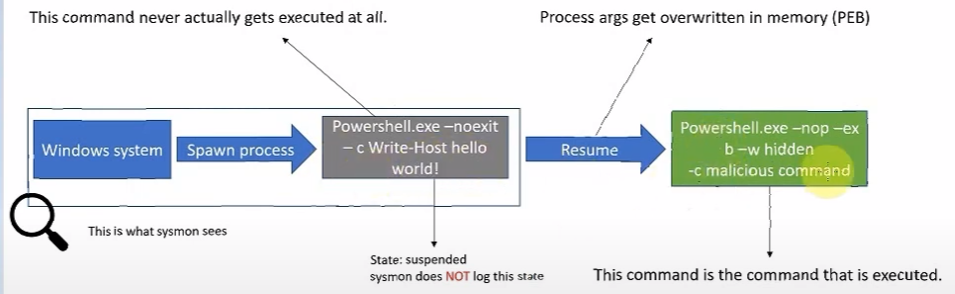

The 4 files attached to this are
Without this section:

The "DWORD newUnicodeLen = 28" which represents the number of characters of pwoershell.exe in Unicode
WITHOUT - The new process execution will be caught - as seen below

Process Hacker with 28 character unidcode add on